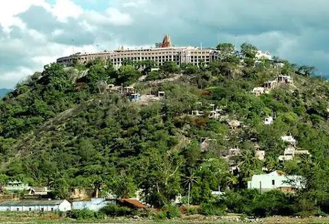
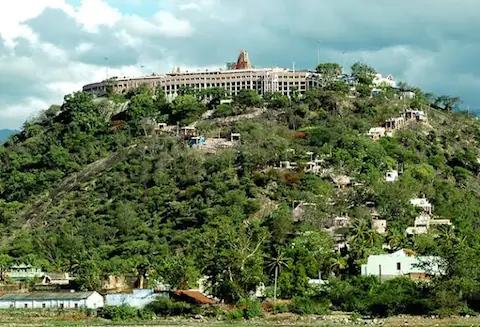

Kodaikanal
Kodaikanal is one of the very popular holiday destination hill resorts in South India. This hill station stands 7200 feet above sea level and situated in upper palani hills of the westernghats near Madurai in Tamil Nadu. Kodaikanal is also popularly known as the princes of Hill Stations. The cool and misty weather, the scenic beauty of the rolling hills and the wooded forest of Kodaikanal and its surroundings will mesmerize any visitor throughout the year. Walk through the wooded forests, row in the lake, bath in one of the splashing waterfalls, go for horse riding and cycling around the lake or simply admire the views. The Kodaikanal Observatory of the Indian Institute of Astrophysics is located in the beautiful Palani range of hills in Southern India. It was established in 1899 as a Solar Physics Observatory and all the activities of the Madras Observatory were shifted to Kodaikanal. A 20 cm refractor at the Observatory is used occasionally for cometary and occultation observations. It is also sometimes made available to visitors for night sky viewing. he Observatory has arranged a popular Astronomy museum on campus for the visitors. The displays are mainly pictorial, supported by a few models. A live solar image and the Fraunhofer spectrum are also presented. From April 1st to June 15th Kodaikanal Observatory is open to public between 10:00 to 12:00 hrs and 14:00 to 16:00 hrs. For the rest of the year the Observatory will be open to public only on every Friday between 10:00 to 12:00 hrs.

 
